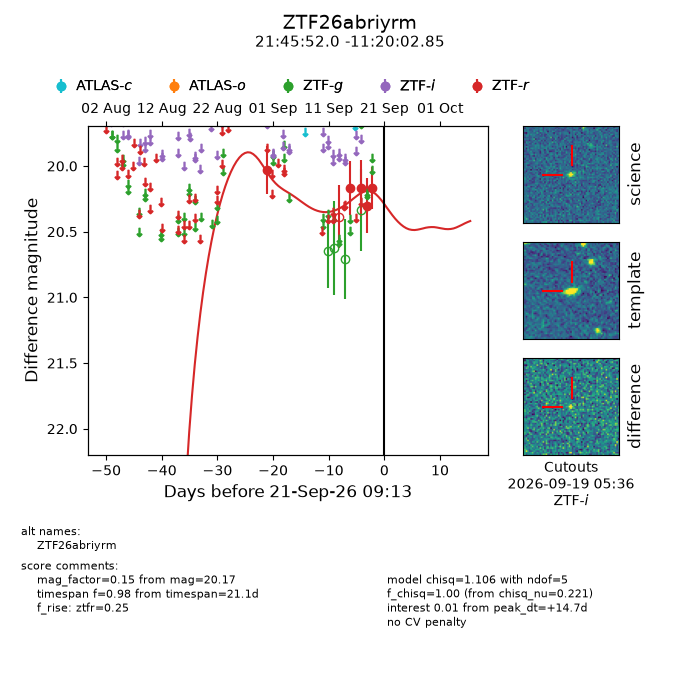
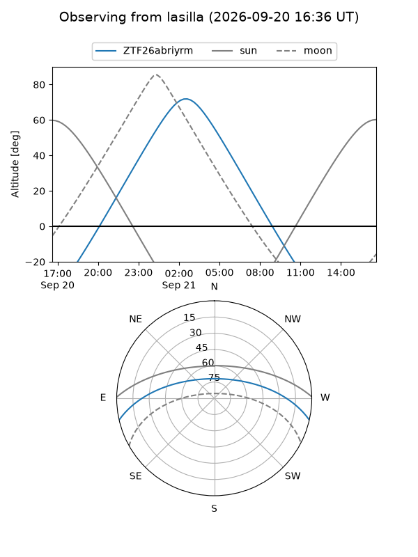
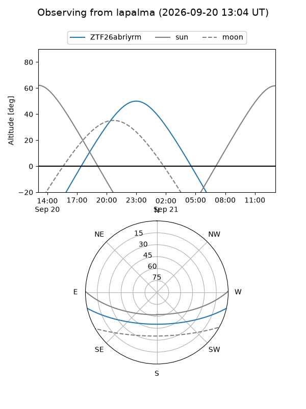
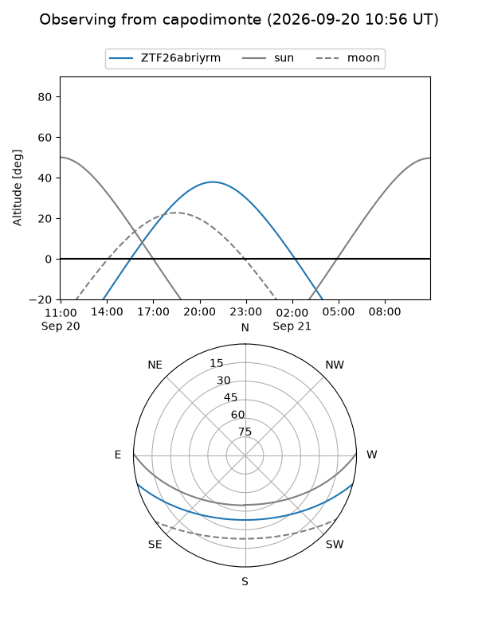
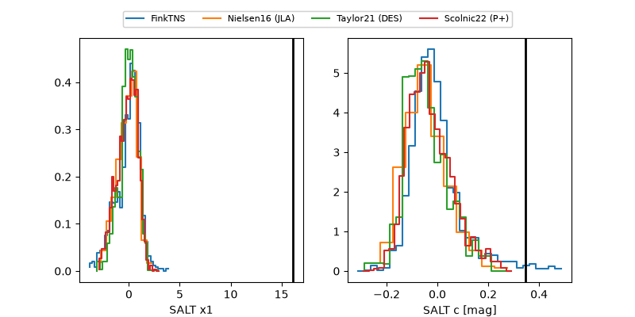

ZTF26abriyrm
Target ZTF26abriyrm at 2026-09-21 09:15
Aliases and brokers:
FINK-ZTF: ztf.fink-portal.org/ZTF26abriyrm
Lasair-ZTF: lasair-ztf.lsst.ac.uk/objects/ZTF26abriyrm
ALeRCE-ZTF: alerce.online/object/ZTF26abriyrm
Direct TNS query: direct search
alt names
ZTF26abriyrm (ztf,fink_ztf)
Coordinates:
equatorial (ra, dec) = 326.4669,-11.33412
equatorial (HMS+DMS) = 21:45:52.05,-11:20:02.85
galactic (l, b) = (43.5779,-43.74735)
Flags:
peak dt: +14.7
Photometry:
last ztfr=20.17
5 ztfr detections
Lightcurve

Visibility



Additional plots
